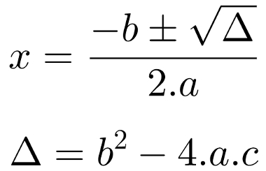

Uma equação é uma expressão matemática que possui em sua composição incógnitas, coeficientes, expoentes e
um sinal de igualdade. As equações são caracterizadas de acordo com o maior expoente de uma das incógnitas. Veja:
2x + 1 = 0. O expoente da incógnita x é igual a 1. Dessa forma, essa equação é classificada como do 1º grau.
2x² + 2x + 6 = 0. Há duas incógnitas x nessa equação, e uma delas possui expoente 2.
Essa equação é classificada como do
2º grau.
Toda equação dp 2° grau com uma icógnita é do tipo:
ax2 + bx + c = 0
Onde a ≠ 0.
Determinar a solução de uma equação é o mesmo que descobrir suas raízes, isto é, o valor ou os valores que satisfazem a equação.
As raízes da equação do 2º grau x² – 10x + 24 = 0, por exemplo, são x = 4 ou x = 6, pois:
Substituindo x = 4 na equação, temos:
x² – 10x + 24 = 0
4² – 10 * 4 + 24 = 0
16 – 40 + 24 = 0
–24 + 24 = 0
0 = 0 (verdadeiro)
Substituindo x = 6 na equação, temos:
x² – 10x + 24 = 0
6² – 10 * 6 + 24 = 0
36 – 60 + 24 = 0
– 24 + 24 = 0
0 = 0 (verdadeiro)
Para extrair as raízes da equação do segundo grau, utilizamos a conhecida fórmula de Bhaskara, dada por:

em que ∆ é conhecido como discriminante da equação ou delta.
Resolveremos agora a equação x² – 2x – 3:
1° Passo: Determinamos os coeficientes da equação. a = 1, pois a é o "acompanhante" do primeiro termo, b = -2, pois acompanha o segundo termo e c = -3, pois
é o termo idependente.
2º Passo: determinar o valor do discriminante ou delta (∆)
∆ = b2 - 4.a.c
∆ = (-2)2 - 4.1.(-3)
∆ = 4 + 12
∆ = 16
3° Passo: Descobrimos as raízes de x
x = [-b ± √∆]/2.a
x = [- (-2) ± √16]/2.1
x = (2 ± 4)/2
x' = (2 + 4)/2 → x' = 6/2 → x' = 3
x" = (2 - 4)/2 → x" = -2/2 → x" = -1
A resposta é x' = 3 e x" = -1
onde x' é a primeira raíz de x e x" é a segunda.
A existência das raízes está atrelada a três possíveis casos:
1° Caso:
∆ > 0, teremos duas raízes reais distintas.
Consideremos a seguinte equação 3x2 + 10x - 8 = 0.
a = 3, b = 10 e c = -8
∆ = b2 - 4.a.c
∆ = 102 - 4.3.(-8)
∆ = 100 + 96
∆ = 196
x = [-b ± √∆]/2.a
x = [-10 ± √196)]/2.3
x = (-10 ± 14)/6
x' = (-10 + 14)/6 → x' = 4/6 → x' = 2/3
x" = (-10 - 14)/6 → x" = -24/6 → x" = -4
2° Caso
∆ = 0, teremos duas raízes reais iguais.
Consideremos a seguinte equação 4x2 - 4x + 1 = 0.
a = 4, b = -4 e c = 1
∆ = b2 - 4.a.c
∆ = (-4)2 - 4.4.1
∆ = 16 - 16
∆ = 0
x = (-b ± √∆)/2.a
x = [-(-4) ± √0]/2.4
x = (4 ± 0)/2
x' = (4 + 0)/2 → x' = 4/2 → x' = 2
x" = (4 - 0)/2 → x' = 4/2 → x' = 2
3° Caso:
∆ < 0 → a equação não admite raízes reais.
Consideremos a seguinte equação x2 + 4x + 13 = 0.
a = 1, b = 4 e c = 13. Portanto:
∆ = b2 - 4.a.c
∆ = 42 - 4.1.13
∆ = 16 - 32
∆ = -36
Com ∆ < 0, neste caso a equação do segundo grau não admite raízes reais, sendo o conjunto verdade dado por: V = Ø (conjunto vazio).
Uma equação do segundo grau é chamada de incompleta se tiver os coeficientes b = 0 ou c = 0. Exemplos: 5x2 - 125 = 0 e
4x2 - 7x = 0. Para a resolução de uma equação incompleta do segundo grau, o uso da fórmula de Bhaskara não é necessário.
Mas é importante lembrar que uso da fórmula ainda é válido.
a) 3x2 - 75 = 0
a = 3, b = 0, c = 75
3x2 - 75 = 0
3x2 = 75
x2 = 75/3
x2 = 25
x = ±√25
x = ± 5
V = (5, -5)
No exemplo acima, b = 0, neste caso basta resolver a equação como se fosse de 1° grau e depois tirar a raíz de x2.
#OBS: não se esqueça de declarar x como positivo e negativo.
b) 2x2 + 18 = 0
a = 2, b = 0 e c = 18
2x2 + 18 = 0
2x2 = -18
x2 = -18/2
x2 = -9
V = Ø
Não existe nenhum número real que elevado ao quadrado dê um número.
c) 4x2 - 5x = 0
Devemos colocar x em evidência, assim temos:
4x2 - 5x = 0
x(4x - 5) = 0
x = 0
4x - 5 = 0
x = 5/4
x = 0 ou x = 5/4
V = (0, 5/4)
Dada a equação ax2 + bx + c = 0, com a ≠ 0 e suas raízes x1 e x2, exite uma relação da soma das raízes e do produto das mesmas
com os coeficientes da equação.
1° relação: Soma das raízes:
S = x1 + x2 = -b/a
2° relação: Produto das raízes:
P = x1.x2 = c/a
Consideremos a equação x2 - 7x + 6 = 0, podemos obter a soma e o produto das raízes.
S = -b/a
S = -(-7)/1
S = 7
P = c/a
P = 6/1
P = 6
Assim devemos achar dois números que somados dão 7 e multiplicados dão 6. Neste caso é fácil notar que os números que procuramos são 1 e 6.
x1 = 1 e x2 = 6
1 + 6 = 7 e 1.6 = 6
OBS: A técnica de resolução por soma e produto é muito utilizada, pois é uma maneira de se achar, de forma rápida, a solução da equação. Porém para se
alcançar essa rapidez é necessário que se faça muitos exercícios a fim de aprimorar sua técnica.
1) Aplicando a fórmula de Bhaskara, resolva as seguintes equações do 2º grau.
a) 3x² – 7x + 4 = 0
b) 9y² – 12y + 4 = 0
c) 5x² + 3x + 5 = 0
2) Determine quais os valores de k para que a equação 2x² + 4x + 5k = 0 tenha raízes reais e distintas.
3) Calcule o valor de p na equação x² – (p + 5)x + 36 = 0, de modo que as raízes reais sejam iguais.
Para essa condição, o valor de ∆ precisa ser igual a 0.
4) Resolva a equação incompleta do 2° grau a seguir sem utilizar a fórmula de Bhaskara:
5x² – 3125 = 0
5) Resolva a equação incompleta do 2° grau apresentada a seguir de duas maneiras diferentes: uma resolução sem a fórmula de Bhaskara e outra através dela.
9x² – 3x = 0
6) Em uma equação do 2° grau do tipo ax² + bx + c = 0, determine o valor de x sabendo que os coeficientes b e c são nulos.
1a)x' = 4/3 e x" = 1
1b)y' = 2/3 = y"
1c)Ø
2)k < 2/5
3)p' = 7 e p" = -17
4)x' = 25 e x" = -25
5)x' = 0 e x" = 1/3.
6)x = 0